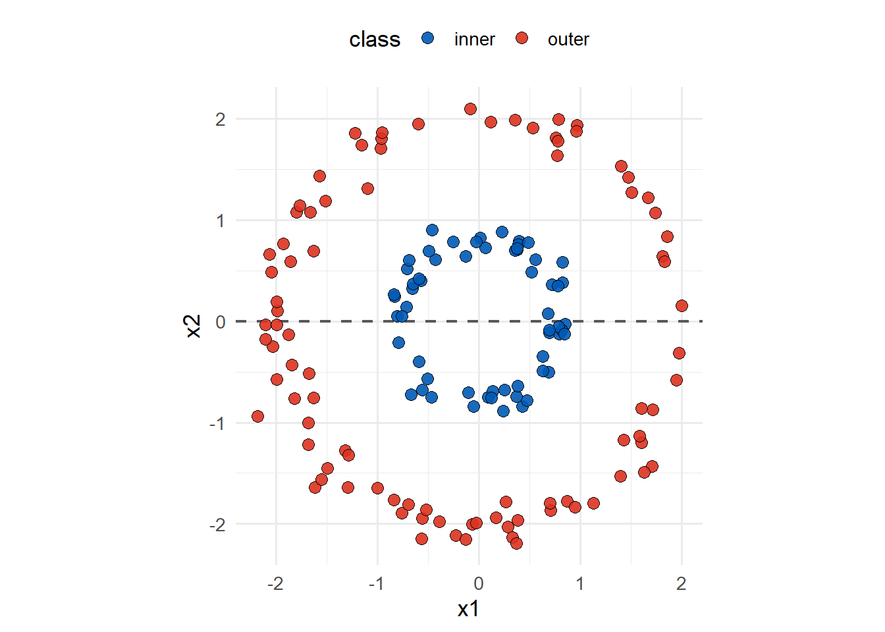
5 Nonlinear SVMs
The soft-margin classifier lets us keep the SVM idea when the data are not perfectly separable. It does this by allowing some observations to violate the margin, or even fall on the wrong side of the boundary, as long as those violations are penalised.
However, this still assumes that a linear boundary is a reasonable starting point. In some problems, linearity is the main issue. The classes may be well structured, but the structure may require a curved boundary rather than a line, plane, or hyperplane in the original predictor space.
This does not mean that we need to abandon the SVM machinery. Instead, we extend the idea:
- keep the margin based classifier
- keep the support vector representation
- allow the boundary to be linear in a richer feature space
That final point is the key idea behind nonlinear SVMs.
5.1 Why Linear Boundaries Are Not Enough
Consider a classification problem where one class sits near the centre and the other class forms a ring around it. No matter how hard you try, a straight line cannot separate the centre class from the outer ring in a natural way. The problem is neither that the data are noisy, nor that the classes overlap. The problem is that the boundary shape is wrong.
The linear SVM is still doing what we asked it to do. It tries to find a boundary of the form
\[ \mathbf{w}\cdot\mathbf{x} + b = 0. \]
If the useful boundary is nonlinear, then no amount of tuning the cost parameter can fix the problem. The cost parameter controls how tolerant the classifier is towards violations; it does not change the basic class of boundary from linear to nonlinear.
Therefore, need a source of boundary flexibility, not just a softening of constraints.
5.2 Feature Expansion
The natural way to create nonlinear boundaries is to expand the predictor space. Recall the 3D example in Section 3.5. In the 2D projection of the data, the classes are inseparable. In fact, they are almost random. However, when the predictor space considers the third dimension, the classes are easily separable with a linear plane. Expanding the dimensionality provided a richer and more valuable feature space for the classifier. Admittedly, this was by design; but, the idea remains the same:
“inseparable in \(p\) dimensions” is a statement about the features you have, not about the data.
In reality, we are very unlikely to have a magic predictor just lying around for us; but, we could create new predictors through transformations.
For example, imagine we had a 1D predictor space. Instead of just using the original predictor \(x\), we might also use:
\[ x^2, \qquad x^3. \] Or, if we had a 2D predictor space, then we could consider interactions with \[ x_1x_2. \] We can then use our SVM mechanics on this expanded feature space. The SVM model will still be linear in the extended feature space; yet, nonlinear in the original predictor space.
Let \(\phi(\mathbf{x})\) denote a transformation of the original predictor vector into a new feature space. The classifier can then be written as
\[ f(\mathbf{x}) = \mathbf{w}\cdot\phi(\mathbf{x}) + b. \]
This is still a linear classifier, but it is linear in \(\phi(\mathbf{x})\) rather than in \(\mathbf{x}\).
5.2.1 Squares, but not the shape
Consider the following 1D example. We can see that the blue inner class is cleanly separated from the surrounding outer orange group. For this reason, we should be able to create a classification model which easily handles this data, just use two thresholds to separate the data. A naive SVM approach cannot do this.
Define the transformation function \(\phi: \mathbb{R} \rightarrow \mathbb{R}\) such that \[ \phi(x) = x^2. \] The classes in the squared feature space of \(\phi\) then separates the blue group to the left and orange group to the right, a perfectly linear separable problem here. Therefore, we can have an SVM friendly decision rule. That is
\[ \text{class}(x^2) = \begin{cases} \text{outer}, & x^2 > 1.765,\\ \text{inner}, & x^2 \leq 1.765.\\ \end{cases} \]
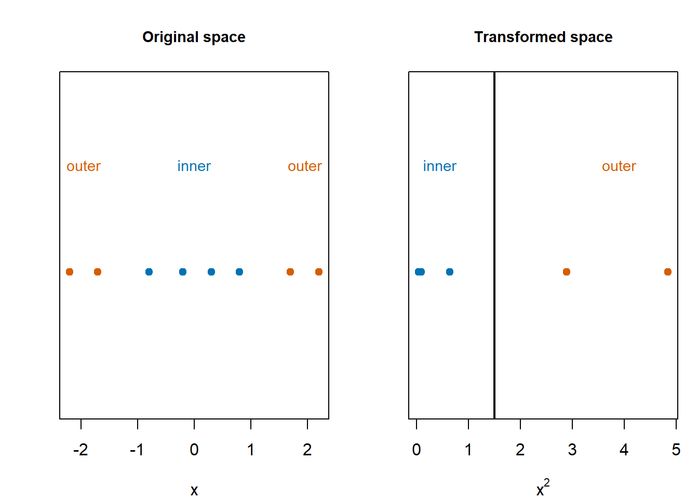
The decision rule in the original space is not a single threshold though, it is given by
\[ \text{class}(x) = \begin{cases} \text{outer}, & x < -\sqrt{1.765},\\ \text{inner}, & -\sqrt{1.5} \leq x \leq \sqrt{1.765},\\ \text{outer}, & x > \sqrt{1.765}. \end{cases} \]
That is, a linear split after transforming \(x\) into \(x^2\) becomes a nonlinear prediction boundary when viewed back on the original \(x\) scale.
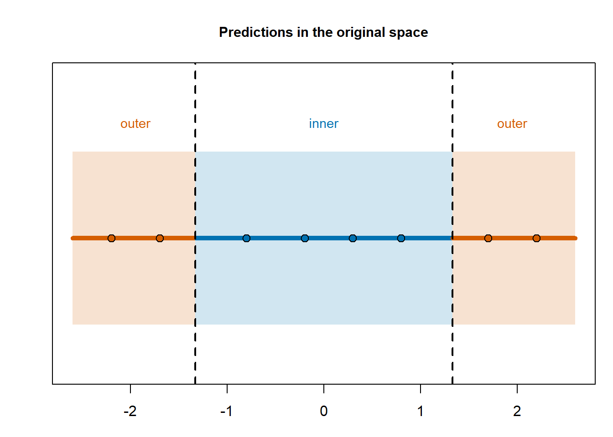
In this sense, nonlinear SVMs do not represent a completely new model or machinery; they just apply the same linear machinery to a transformed feature space. It is the inverse transformation of this machinery back to into the original space that produces nonlinear boundaries.
5.2.2 A Lifted Perspective
Let us reconsider the ring example illustrated by Figure 5.1. In the original \((x_1,x_2)\) space, the inner and outer classes are arranged in concentric rings. A natural additional feature is the squared distance from the origin:
\[ r^2 = x_1^2 + x_2^2. \]
Points close to the centre have small values of \(r^2\), whilst points in the outer ring have larger values of \(r^2\). This is clearly a rich feature to have in the predictor set. We have two options:
- Isolate the transformation such that \(\phi(\mathbf{x}) = x_1^2 + x_2^2\) since we can classify the data based purely on the radii.
- Add the transformation as an additional predictor to the existing 2D space.
Given that we have just done a 1D classification problem above, let us choose option two, just for fun!
Define \(\phi: \mathbb{R}^2 \rightarrow \mathbb{R}^3\) such that
\[ \phi(\mathbf{x}) = \left[x_1,\;x_2,\;x_1^2 + x_2^2\right]. \] We now want to use SVMs to find a linear boundary on this space, a \(\mathbf{w}\) and \(b\) for \[ \mathbf{w}\cdot \phi(\mathbf{x}) + b = 0 \] If we analyse the expanded feature space in Figure 5.2 below, we can try and eyeball a linear boundary. Eyeballing is good for intuition, not optimality.
As expected, the classes can be separated by a plane along the new feature, \(r^2\). As a result, we could define our boundary by
\[ x_1^2 + x_2^2 - 2 = 0. \]
When we project this boundary back into the original \((x_1,x_2)\) space, it becomes a circular boundary.
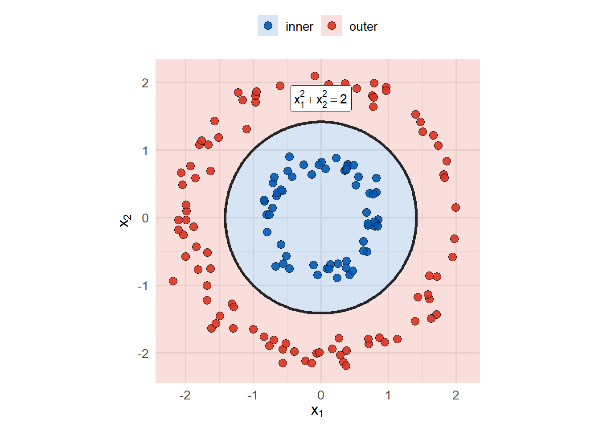
This shows that we could have chosen a different \(\phi\) and arrived at the same result. Explicitly, we could have chosen: \[ \phi(\mathbf{x}) = [x_1^2, x_2^2] \] with \(\mathbf{w} = [1, 1]\).
This provides us another way to view the SVM boundary.
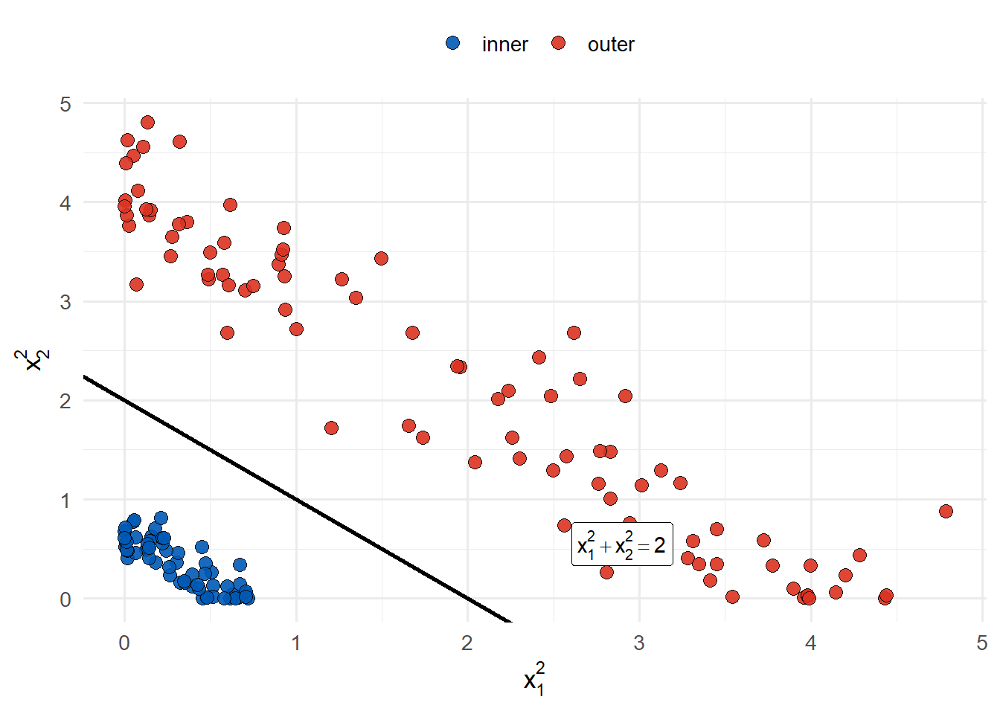
This is fun. When you face a separable problem, just endlessly add more features, right?
5.3 Why Not Just Keep Adding Features?
In theory, we could manually consider expansive feature set transformations by adding many polynomial terms and interactions. Sometimes this is perfectly reasonable. In fact, explicitly adding useful features is often a good modelling habit; however, this approach becomes unsustainable quickly:
- the number of transformed features can grow very fast
- many transformed variables may be difficult to interpret
- some transformations are not obvious in advance
- computation can become expensive in high dimensions
The SVM has a useful structure which comes to the rescue. The optimal classifier can be expressed in a way that depends on the observations through dot products only. But why does this matter? The Kernel Trick.
5.4 The Kernel Trick
Recall from the maximal margin and soft margin chapters that the optimal SVM boundary is determined by the support vectors. In the dual representation, the boundary has the form \[ \mathbf{w} = \sum_{i=1}^n \alpha_i y_i \mathbf{x}_i, \] for both margin cases. This implies that the linear boundary can be expressed from the observations such that:
\[ f(\mathbf{x}) = \sum_{i=1}^{n}\alpha_i y_i\,\mathbf{x}_i\cdot\mathbf{x} + b. \]
Remember that only the support vectors, the observations corresponding to \(\alpha_i > 0\), contribute to this sum.
Now, what happens when we transform the feature space with \(\phi\) for the SVM. Then we have the same idea that
\[ f(\mathbf{x}) = \sum_{i=1}^{n}\alpha_i y_i \phi(\mathbf{x}_i)\cdot\phi(\mathbf{x}) +b, \] depends on the transformed observations only through the dot product \(\phi(\mathbf{x}_i)\cdot\phi(\mathbf{x}).\)
A kernel function is a shortcut for this calculation:
\[ K(\mathbf{x}_i,\mathbf{x}_j) = \phi(\mathbf{x}_i)\cdot\phi(\mathbf{x}_j). \]
Therefore, the classifier can be written as
\[ f(\mathbf{x}) = \sum_{i=1}^{n}\alpha_i y_i K(\mathbf{x}_i,\mathbf{x}) + b. \]
This is the kernel trick, the ability to just substitute \(K(\mathbf{x}_i,\mathbf{x}_j)\) instead of \(\mathbf{x}_i\cdot\mathbf{x}_j\). This lets the SVM behave as if it is working in a richer feature space, without explicitly constructing all of the transformed features. In a way, we were always using an identity kernel. Now we want to be more interesting.
5.5 Common Kernels
Several kernel choices are well known and available in svm. Each one defines a different way of measuring similarity between observations, and therefore a different type of boundary that the SVM can represent.
5.5.1 Linear kernel
The one we have been using implicitly… until now.
\[ K(\mathbf{x}_i,\mathbf{x}_j) = \mathbf{x}_i\cdot\mathbf{x}_j. \] The linear kernel gives the ordinary support vector classifier. It is appropriate when a linear boundary is plausible, and it is usually the simplest baseline to fit first.
5.5.2 Polynomial kernel
\[ K(\mathbf{x}_i,\mathbf{x}_j) = \left(c + \gamma\mathbf{x}_i\cdot\mathbf{x}_j\right)^d. \]
The polynomial kernel can capture curved boundaries through polynomial interactions. The degree \(d\) controls the complexity of the polynomial structure. A low degree gives a modest amount of curvature; a high degree can become much more flexible; and even easier to overfit.
5.5.3 Radial kernel
\[ K(\mathbf{x}_i,\mathbf{x}_j) = \exp\left(-\gamma \lVert \mathbf{x}_i - \mathbf{x}_j\rVert^2\right). \]
The radial kernel is a common practical choice because it can produce flexible local boundaries. It measures similarity by distance: observations that are close together have high similarity, while observations far apart have low similarity.
5.5.4 Sigmoid kernel
\[ K(\mathbf{x}_i,\mathbf{x}_j) = \tanh\left(\gamma \mathbf{x}_i\cdot\mathbf{x}_j + c\right). \]
The sigmoid kernel is related to neural network style activation functions. It exists in the SVM framework, but it mimics the idea of a two layer neural network making its use specialised.
5.5.5 Visualising Different Kernels
The easiest way to see what the kernels are doing is to fit them to the same data and compare their prediction regions.
In Figure 5.4 below, each panel uses the same observations simulated from trigonometric functions and the same SVM machinery. The only change is the kernel. The shaded regions show the predicted class across the predictor space, clearly illustrating the the boundary shape.
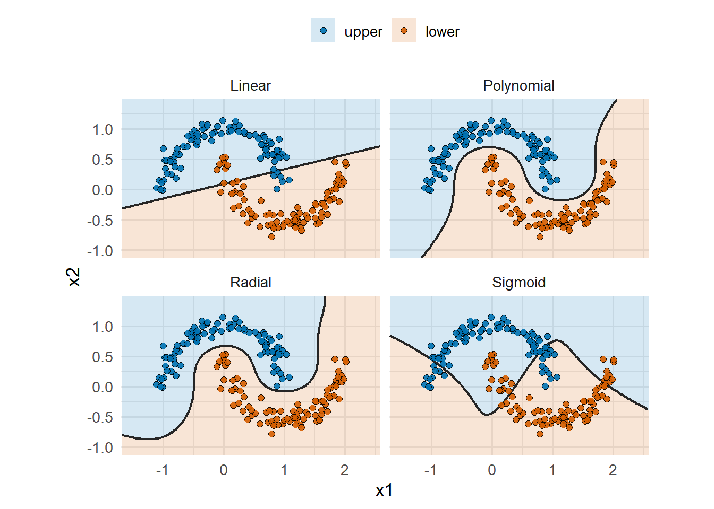
Obviously, the linear kernel is restricted to a straight boundary. The polynomial and radial kernels can create curved boundaries that better follow the two bands. The sigmoid kernel is also nonlinear, but its use case is more for its relationship to neural networks rather than its SVM performance.
An important note here is that this is an isolated look at these boundary shapes. These shapes can change DRASTICALLY depending on:
- the structure of the data classes,
- the kernel parameters.
5.6 The Radial’s Gamma
The radial kernel includes the parameter \(\gamma\):
\[ K(\mathbf{x}_i,\mathbf{x}_j) = \exp\left(-\gamma \lVert \mathbf{x}_i - \mathbf{x}_j\rVert^2\right). \]
This parameter controls how quickly similarity decreases as points move away from each other.
- Large \(\gamma\): similarity decays quickly, so each observation has a more local influence. This gives a more flexible boundary.
- Small \(\gamma\): similarity decays slowly, so observations influence a wider region. This gives a smoother boundary.
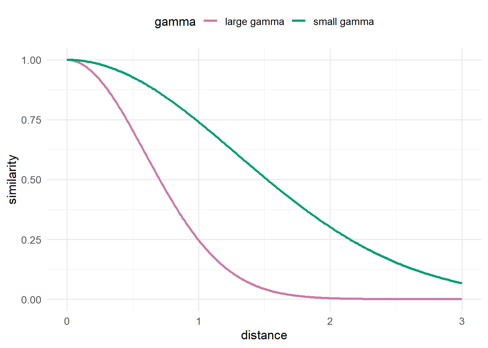
The cost parameter and gamma therefore control different parts of the model:
costcontrols how strongly margin violations are penalisedgammacontrols how local or smooth the radial similarity rule is
For this reason, radial SVM tuning usually considers both cost and gamma.
5.7 Which Kernel Should We Use?
There is no universal best kernel. The choice depends on the structure of the problem.
A useful practical sequence is:
- Fit a linear kernel first as a baseline.
- If the linear boundary is clearly too restrictive, consider a nonlinear kernel.
- Use cross-validation to compare tuning choices.
- Interpret the fitted boundary where the feature dimension allows it.
Kernel choice should therefore be treated as a modelling decision, not as a purely mathematical preference. The kernel needs to match the type of structure that the model is expected to learn.
5.8 R Example: Ring Data
Let us now use the ring example to compare three routes:
- a linear kernel on the original variables
- a linear kernel after explicit feature expansion
- a radial kernel on the original variables
This sequence is useful because it shows why the kernel idea is needed. We first see that the original predictors are not enough for a linear boundary. We then show that a simple transformation helps. Finally, we use a kernel to get nonlinear behaviour without manually building the transformed representation.
5.8.1 Simulate and Split the Data
The training data have an inner class and an outer class. The structure is visually clear, but it is not linearly separable in the two original coordinates.
Show data setup code
library(ggplot2)
library(e1071)
load("Data/ring.RData")
data$y <- as.factor(data$y)
# 80% training, 20% test
ntrain = round(dim(data)[1]*.8)
set.seed(2)
tindex = sample(dim(data)[1], ntrain)
traindf = data[tindex,]
testdf = data[-tindex,]
p = ggplot(data = traindf, aes(x = X1, y = X2))+
geom_point(aes(color = as.factor(y)), size=3, alpha = 0.4) +
scale_color_manual(values = c("red", "blue"))
p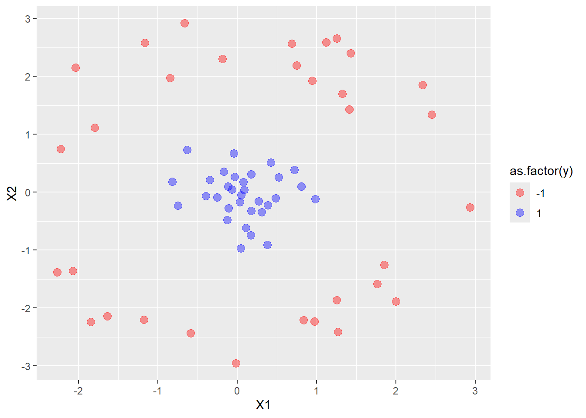
5.8.2 Linear Kernel on the Original Variables
A linear kernel only has access to straight-line separation in the original predictor space. This makes it the wrong model for this geometry.
Show linear kernel fit code
linear_model <- svm(
y ~ X1 + X2,
data = traindf,
type = "C-classification",
kernel = "linear",
scale = TRUE,
cost = 1
)
linear_results <- data.frame(
model = "linear kernel on original variables",
train_accuracy = mean(predict(linear_model, traindf) == traindf$y),
test_accuracy = mean(predict(linear_model, testdf) == testdf$y)
)
kableExtra::kable(linear_results)| model | train_accuracy | test_accuracy |
|---|---|---|
| linear kernel on original variables | 0.703125 | 0.625 |
Show linear kernel fit code
plot(linear_model, traindf[,c(1:3)])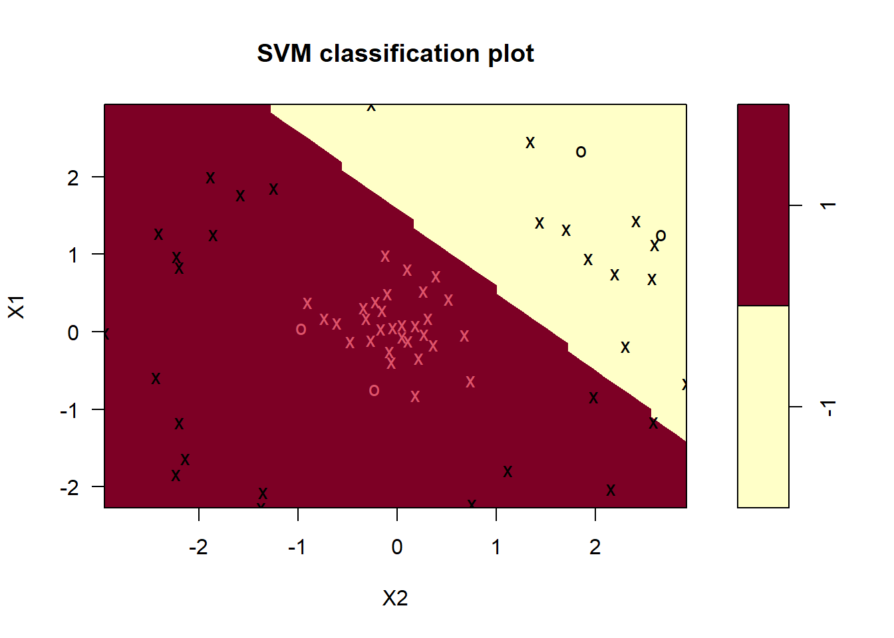
To be fair, the performance is better than one may expect give that the model is being asked to solve a circular problem with a straight line. But, given the data, we should be aiming for perfect training accuracy, which makes this relatively poor, as expected.
5.8.3 Linear Kernel After Explicit Feature Expansion
If we add squared terms, the ring structure becomes easier for a linear classifier to represent.
Show expanded-feature fit code
traindf$X1_sq <- traindf$X1^2
traindf$X2_sq <- traindf$X2^2
testdf$X1_sq <- testdf$X1^2
testdf$X2_sq <- testdf$X2^2
expanded_model <- svm(
y ~ X1_sq + X2_sq,
data = traindf,
type = "C-classification",
kernel = "linear",
scale = TRUE,
cost = 1
)
expanded_results <- data.frame(
model = "linear kernel on squared variables",
train_accuracy = mean(predict(expanded_model, traindf) == traindf$y),
test_accuracy = mean(predict(expanded_model, testdf) == testdf$y)
)
kableExtra::kable(expanded_results)| model | train_accuracy | test_accuracy |
|---|---|---|
| linear kernel on squared variables | 1 | 1 |
Show expanded-feature fit code
plot(expanded_model, traindf[,c(3, 4, 5)])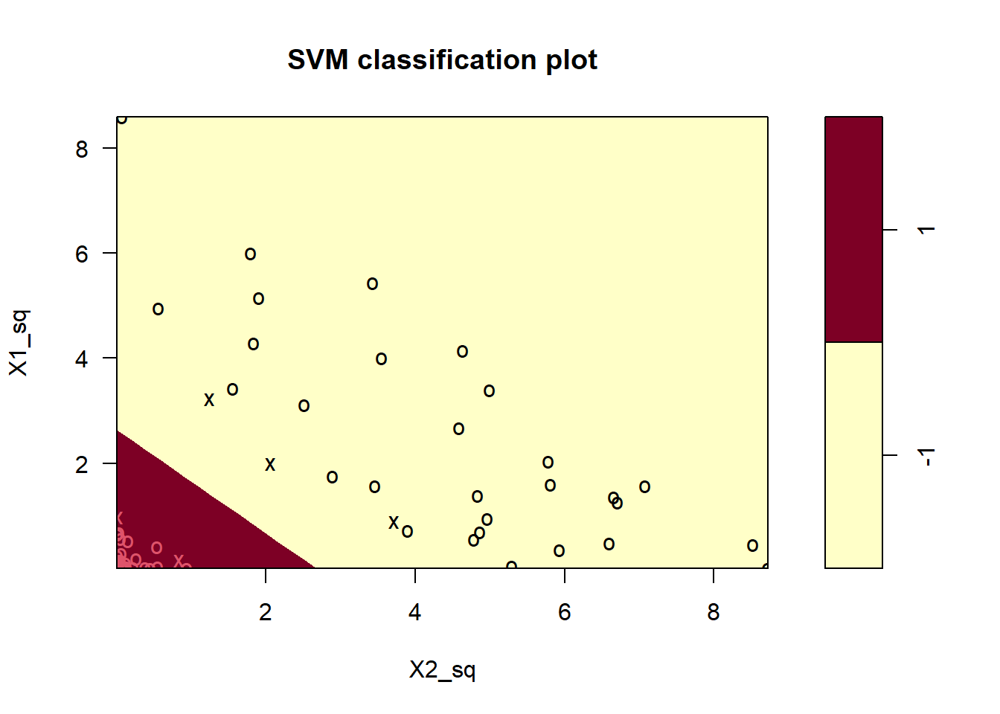
As we motivated before, the performance is perfect on both the train and test data since the squared variables contain information about distance from the centre of the concentric rings. Therefore, we gave the linear SVM a more useful representation of the problem which made the data linearly separable. The only downside is that we manually expanded the feature space.
5.8.4 Radial Kernel on the Original Variables
The radial kernel gives the SVM nonlinear flexibility without manually adding the squared variables.
Show radial kernel fit code
radial_model <- svm(
y ~ X1 + X2,
data = traindf,
type = "C-classification",
kernel = "radial",
scale = TRUE,
cost = 1,
gamma = 0.5
)
radial_results <- data.frame(
model = "radial kernel on original variables",
train_accuracy = mean(predict(radial_model, traindf) == traindf$y),
test_accuracy = mean(predict(radial_model, testdf) == testdf$y)
)
kableExtra::kable(radial_results)| model | train_accuracy | test_accuracy |
|---|---|---|
| radial kernel on original variables | 1 | 1 |
Show radial kernel boundary plot code
plot(radial_model, traindf[, c(1:3)])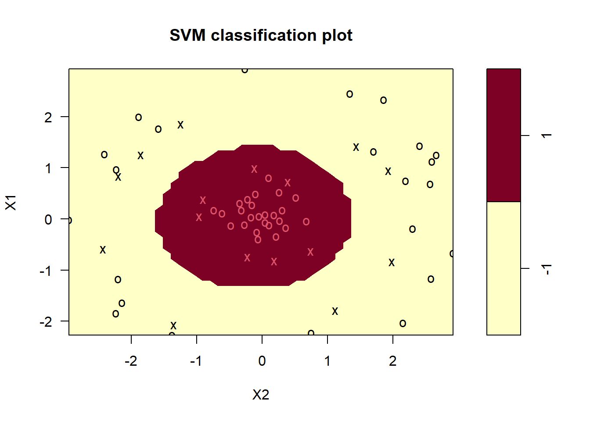
The boundary shown above is nonlinear in the original predictor space. The SVM has not stopped using the margin principle; it is simply applying that principle through a kernel-defined similarity calculation.
The comparison only reiterates our discussion above:
- a linear boundary in the original space is too restrictive
- explicit feature expansion can make a linear boundary useful again
- a kernel can provide similar flexibility without manually constructing the expanded features
5.8.5 Tune the Radial Kernel
Although not too important in this simulated dataset, the radial kernel has both cost and gamma to tune. The cost parameter controls the penalty for violations, whilst gamma controls how local the radial similarity rule is. Once again, we can use tune.svm to carry out cross-validation for us on these parameters.
Show radial kernel tuning code
set.seed(123)
tuned <- tune.svm(
y ~ X1 + X2,
data = traindf,
kernel = "radial",
cost = seq(0.1, 2, by = 0.1),
gamma = c(0.05, 0.1, 0.25, 0.5, 1),
tunecontrol = tune.control(cross = 10)
)
kableExtra::kable(data.frame(
best_cost = tuned$best.parameters$cost,
best_gamma = tuned$best.parameters$gamma,
best_cross_validation_error = tuned$best.performance
))| best_cost | best_gamma | best_cross_validation_error |
|---|---|---|
| 0.1 | 0.5 | 0 |
As before, cross-validation estimates how the model performs on held-out data. We do not choose cost and gamma purely by training accuracy because a very flexible radial SVM can easily overfit.
5.9 Takeaway
Nonlinear SVMs extend the linear SVM rather than replace it:
- the margin idea remains at the core
- support vectors still determine the classifier
- the boundary is linear in a transformed feature space
- kernels let us use that richer space through similarity calculations
An SVM is not limited to linear boundaries. A linear boundary in a well-chosen feature space can become a nonlinear boundary in the original predictor space.